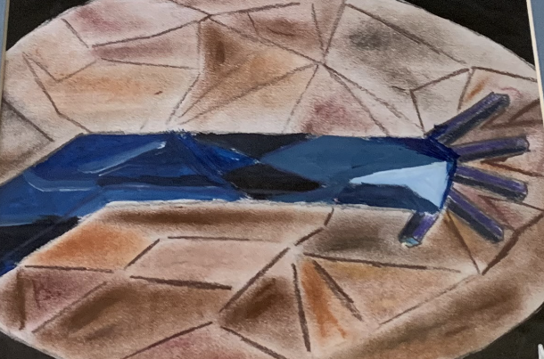

Cubism Artwork

Mediums: Chalk Pastel, Acryllic Paint, Sketchbook Paper
This assignment was supposed to help us further understand an art period of our choice. I chose Cubism, because, along with Abstract Expressionism it had often stood out to me as a unique movement, especially for its attention towards geometric figures. I portrayed an arm with a broken thumb, but drawn in a cubist version with precise geometric figures. the paper is black, with a large, centered oval which allows the picture to stand out. The background consists of a series of nonconvex shapes - arrowheads, open parallelograms and others. They are colored with various shades of brown, so that the centered background is slightly dull, with hints of other color that bring it out more. I drew this with chalk pastel, but the arm itself is painted with various shades of blue acrylic paint. as can be seen, the fingers and thumb are portrayed as prisms, while the arm is portrayed with sharp angles and jagged lines, adding to the geometric feel. I was happy with this work, and showcased it at the Mission Coffee House art exhibition. I felt that I had managed to convey exactly what I was going for, and learned a lot more about cubism in the process.